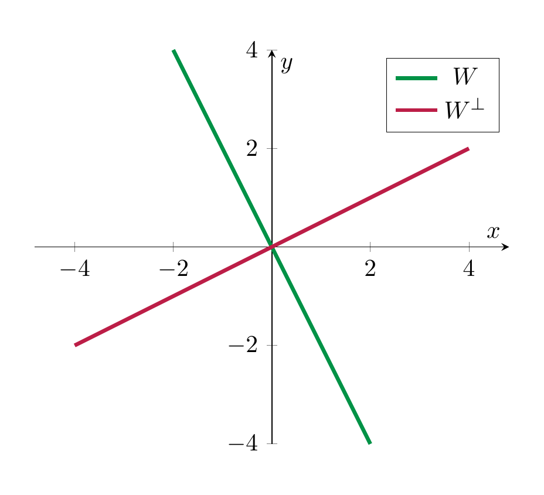
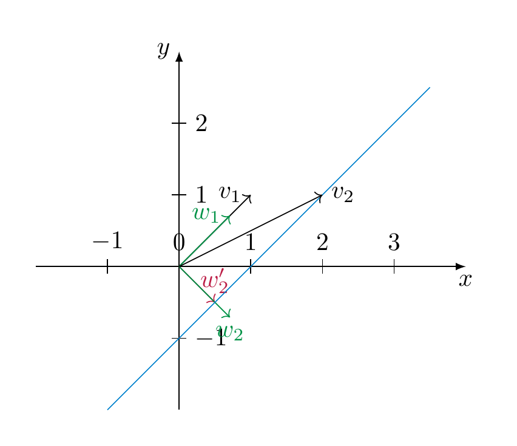

Euclidean spaces¶
Definition 7.15 (Related exercises: Exercise 7.28)
A Euclidean vector space is a vector space \(V\) together with a map
that is
-
bilinear (i.e., \({\left \langle v, - \right \rangle}\) and \({\left \langle -, v \right \rangle} : V \to {\bf R}\) are linear for each \(v \in V\)),
-
symmetric (i.e., \({\left \langle v, w \right \rangle} = {\left \langle w, v \right \rangle}\)), and
-
positive definite (\({\left \langle v, v \right \rangle} > 0\) for each \(v \ne 0\)).
One also refers to the map \({\left \langle -, - \right \rangle}\) as the scalar product on \(V\). We say \(v, w\) are orthogonal if \({\left \langle v, w \right \rangle}=0\). We will indicate this by writing
We call
the norm of the vector \(v\). For \(v, w \in V\), the distance between \(v\) and \(w\) is defined as
Example 7.16 (Related exercises: Exercise 7.15, Exercise 7.1)
-
\({\bf R}^n\) with the above scalar product is an Euclidean vector space. More generally, for a symmetric, positive definite matrix \(A\), \({\bf R}^n\) together \({\left \langle -, - \right \rangle_{A}}\) is an Euclidean space.
In other words, the above turns the fundamental properties of \({\bf R}^n\), together with the standard scalar product (or, more generally \({\bf R}^n\) with the scalar product \({\left \langle -, - \right \rangle_{A}}\) given by a positive definite symmetric matrix \(A\)) into an abstrac definition, similarly to the way that a vector space is an abstraction of the key properties of \({\bf R}^n\).
-
If \(V\), together with some given scalar product \({\left \langle -, - \right \rangle}\) is a Euclidean space, then so is any subspace of \(V\). In particular, any subspace of \({\bf R}^n\) with the standard scalar product is again an Euclidean space. For example, any plane inside \({\bf R}^3\) is an Euclidean space.
-
One can use elementary properties of the integral to show that the vector space \(C = C([-1,1])\) of continuous functions \(f : [-1,1] \to {\bf R}\) with
is an (infinite-dimensional) Euclidean space, which is of fundamental importance in analysis.
- As in Example 7.8, consider again \(V = {\bf R}^n\), but
This is bilinear and symmetric, but not positive definite, and therefore not a scalar product.
Proposition 7.17
Let \((V, {\left \langle -, - \right \rangle})\) be an Euclidean space. For each \(v, w \in V\), there holds:
-
\(|\hspace{-0.5mm}| {v} |\hspace{-0.5mm}| \ge 0\),
-
\(|\hspace{-0.5mm}| {v} |\hspace{-0.5mm}| = 0\) if and only if \(v = 0\),
-
\(|\hspace{-0.5mm}| {rv} |\hspace{-0.5mm}| = |r| |\hspace{-0.5mm}| {v} |\hspace{-0.5mm}|\) for \(r \in {\bf R}\),
Proof. The first and third statement is immediate. The second holds since \({\left \langle -, - \right \rangle}\) is (by definition) positive definite. ◻
The scalar product yields a crucial additional feature that general vector spaces do not possess. This is based on the following idea. Throughout, let \((V, {\left \langle -, - \right \rangle})\) be an Euclidean vector space.
Lemma 7.18
Let \(e \in V\) be a vector of norm 1, i.e., \(|\hspace{-0.5mm}| {e} |\hspace{-0.5mm}| = 1\). Let \(v \in V\) be any vector. Then the vector
is orthogonal to \(e\) and we have the equation
(7.19)
expressing \(v\) as a sum of a scalar multiple of \(e\) and a vector that is orthogonal to \(e\).
Proof. The orthogonality of \(\tilde v\) and \(e\) is a computation using the bilinearity of \({\left \langle -, - \right \rangle}\):
The equation is obvious from the definition of \(\tilde v\). ◻
We now extend the observation of Lemma 7.18 to more than a single vector. To do so, we introduce some terminology.
Definition and Lemma 7.20 (Related exercises: Exercise 7.10, Exercise 7.3)
The orthogonal complement of a subset \(M \subset V\) is defined as
This is a subspace of \(V\).
For a subspace \(W\), one has
(7.21)
The last assertion can be rephrased by saying that the zero vector is the only element in \(W\) that is orthogonal to all vectors in \(W\). Colloquially, this means that if \(W\) gets larger, then \(W^\bot\) gets smaller. This idea is made more precise (in terms of dimensions) in Corollary 7.31 below. The last assertion is proved using the positive-definiteness of \({\left \langle -, - \right \rangle}\) (specifically, Proposition 7.172.).

Example 7.22
Consider the subspace \(W = L (\left ( \begin{array}{c} 1 \\ 2 \\ 4 \end{array} \right ), \left ( \begin{array}{c} 1 \\ 1 \\ 0 \end{array} \right )) \subset {\bf R}^3\) (with its standard scalar product). We compute \(W^\bot\). A vector \(x = \left ( \begin{array}{c} x_1 \\ x_2 \\ x_3 \end{array} \right ) \in {\bf R}^3\) will be orthogonal to \(W\) if and only if it is orthogonal to \(v_1 = \left ( \begin{array}{c} 1 \\ 2 \\ 4 \end{array} \right )\) and \(v_2 = \left ( \begin{array}{c} 1 \\ 1 \\ 0 \end{array} \right )\). This follows from the linearity of \({\left \langle x, - \right \rangle}\). We make the conditions \(x \bot v_1\) and \(x \bot v_2\) explicit:
We solve this homogeneous system
which shows that \(x_3\) is a free variable, and that the solution space of the system, i.e., \(W^\bot\) is the subspace
Definition 7.23
A family \(v_1, \dots, v_n\) of vectors is called an orthonormal system if
-
\(|\hspace{-0.5mm}| {v_i} |\hspace{-0.5mm}| = 1\) (i.e., \({\left \langle v_i, v_i \right \rangle} = 1\)) for all \(i\),
-
\(v_i \bot v_j\) (i.e., \({\left \langle v_i, v_j \right \rangle} = 0\)) for all \(i \ne j\).
If the vectors additionally form a basis of \(V\), then we speak of an orthonormal basis.
For example, the standard basis in \({\bf R}^n\) is an orthonormal basis (with respect to the standard scalar product).
Theorem 7.24 (Related exercises: Exercise 7.2, Exercise 7.17, Exercise 7.28, Exercise 7.7, Exercise 7.3, Exercise 7.16)
Let \(u_1, \dots, u_n\) be an orthonormal system (in an Euclidean space). Let \(U = L(u_1, \dots, u_n) \subset V\) be the subspace spanned by these vectors. Then there is a unique linear map, called the orthogonal projection
such that
-
\(p(u) = u\) for all \(u \in U\),
-
\(p(v) - v \in U^\bot\) for all \(v \in V\).
In particular, every vector \(v \in V\) can be written as
i.e., a sum of a vector in \(U\) and another one in its orthogonal complement \(U^\bot\). This is the unique representation of \(v\) in such a form.
The map \(p\) is given by
(7.25)
More generally, if \(u_1, \dots, u_n\) is an orthogonal system (not necessarily orthonormal), then the map
(7.26)
is the orthogonal projection onto \(U = L(u_1, \dots, u_n)\).
Example 7.27
In \(V = {\bf R}^3\), equipped with its standard scalar product, we consider \(u_1 = (1, 0,0)\) and \(u_2=(0,1,0)\). These form an orthonormal system. Then \(U = L(u_1, u_2) = \{(x,y,0) | x,y \in {\bf R}\}\) is the \(x\)-\(y\)-plane; its orthogonal complement is \(U^\bot = L((0,0,1)) = \{(0,0,z)|z \in {\bf R}\}\), the \(z\)-axis. The orthogonal projection as defined in sends a vector \(v = (x,y,z)\) to
Proof. The map \(p\) defined in is linear, since \({\left \langle -, u_k \right \rangle}\) is linear. It satisfies the two conditions. One checks this using that the \(u_k\) form an orthonormal system, very similarly to the proof of Lemma 7.18.
If \(q : V \to U\) is another map with these two properties, we have
for all \(v \in V\), \(u \in U\). Since \(q(v)\), \(p(v) \in U\), we have \(p(v)-q(v) \in U\). Thus, the vector \(p(v)-q(v)\) is zero, by . This shows the unicity of \(p\).
The final claim holds since \(v = \underbrace{p(v)}_{\in U} + \underbrace{v - p(v)}_{\in U^\bot}\) is such a representation. If \(v = u_1 + u_1'\) with \(u_1 \in U\) and \(u_1' \in U^\bot\) is another such representation, then \(u-u_1 = u' - u_1'\) lies both in \(U\) (left hand side), but also in \(U^\bot\) (right hand side). However, again applying Proposition 7.172. to \(U\), we have \(U \cap U^\bot = \{0\}\), so \(u=u_1\) and \(u' = u'_1\). ◻
Corollary 7.28
Suppose \(u_1, \dots, u_n\) form an orthonormal system (of a Euclidean vector space \((V, {\left \langle -, - \right \rangle})\)) such that \(V\) is spanned by these vectors. Then
- the following formula holds for any \(v \in V\):
(7.29)
- The vectors are necessarily linearly independent, i.e., they form an orthonormal basis.
Proof. We apply Theorem 7.24 to these vectors. By the assumption \(U = V\), so that by 1., \(p(v) = {\mathrm {id}}\). The first claim then holds by .
If \(0 = \sum_{k=1}^n a_k u_k\) is a linear combination, we apply \({\left \langle -, u_l \right \rangle}\), for any \(1 \le l \le n\), to :
In this sum, all terms except the one with \(k=l\) are zero, since \(u_k \bot u_l\) for \(k \ne l\). We also have \({\left \langle u_l, u_l \right \rangle} = 1\), which shows that \(a_l = 0\), and therefore the linear independence of the given vectors. ◻
Example 7.30
The standard basis \(e_1, \dots, e_n\) of \({\bf R}^n\) is an orthonormal basis. For \(v = \left ( \begin{array}{c} v_1 \\ \vdots \\ v_n \end{array} \right )\), we have \({\left \langle e_i, v \right \rangle} = v_i\) and the representation in is the usual expansion of \(v\):
In general, the identity is a convenient way to compute the coordinates of a given vector in terms of an (orthonomal) basis.
Using these results, one can quickly prove:
Corollary 7.31 (Related exercises: Exercise 7.2, Exercise 7.16)
If \(U \subset V\) is a subspace of a finite-dimensional Euclidean space then
Moreover, we then have following equality:
i.e., the orthogonal complement of the orthogonal complement of \(U\) is equal to \(U\).
The presence of a positive definite (symmetric) matrix yields the following algorithmic device that constructs a particularly convenient set of vectors.
Proposition 7.32
(Gram–Schmidt orthogonalization) Let \(v_1, \dots, v_r\) be any set of linearly independent vectors (in an Euclidean space). Then the vectors \(w_1, \dots, w_r\) defined inductively as follows are an orthonormal system: They are constructed as follows
We have
In particular, if the \(v_i\) form a basis, then so do the \(w_i\), i.e., they then form an orthonormal basis. Yet more in particular, this shows that any finite-dimensional Euclidean space admits an orthonormal basis.
Proof. In each step, the vector \(w'_r\) is constructed in such a way that \(w'_r\) is orthogonal to the preceding vectors \(w_1, \dots, w_{r-1}\), cf. . The division by the norms of the vectors \(w'_r\) ensures that \(|\hspace{-0.5mm}| {w_r} |\hspace{-0.5mm}| = 1\). Note that this is possible since \(|\hspace{-0.5mm}| {w'_r} |\hspace{-0.5mm}| > 0\) since \(w'_r \ne 0\) and \({\left \langle -, - \right \rangle}\) is positive definite. ◻
Example 7.33
We consider \(A = {\mathrm {id}}_2\), i.e., the standard scalar product on \({\bf R}^2\) and \(v_1 = \left ( \begin{array}{c} 1 \\ 1 \end{array} \right )\) and \(v_2 = \left ( \begin{array}{c} 2 \\ 1 \end{array} \right )\). (One checks this is a basis of \({\bf R}^2\)!) Then
Here is an illustration of the method in this example. The blue line depicts the vectors of the form \(v_2 + a w_1\) for \(a \in {\bf R}\). The vector \(w'_2\) is the vector on that line that is orthogonal to \(w_1\):

Corollary 7.34
Let \(U \subset V\) be a subspace of a finite-dimensional Euclidean space \(V\). Then there are two unique linear maps, called the orthogonal projection onto \(U\), resp. onto \(U^\bot\),
such that every vector \(v \in V\) can be written as
(7.35)
Proof. By Proposition 7.32, \(U\) has an orthonormal basis, so we can apply Theorem 7.24, which gives us the orthogonal projection \(p_U: V \to U\). If we define \(p_{U^\bot}(v) := v - p_U(v)\), holds by design, moreover, \(p_{U^\bot}(v) \in U^\bot\) again by Theorem 7.24. The unicity of a decomposition as in is again part of Theorem 7.24. ◻